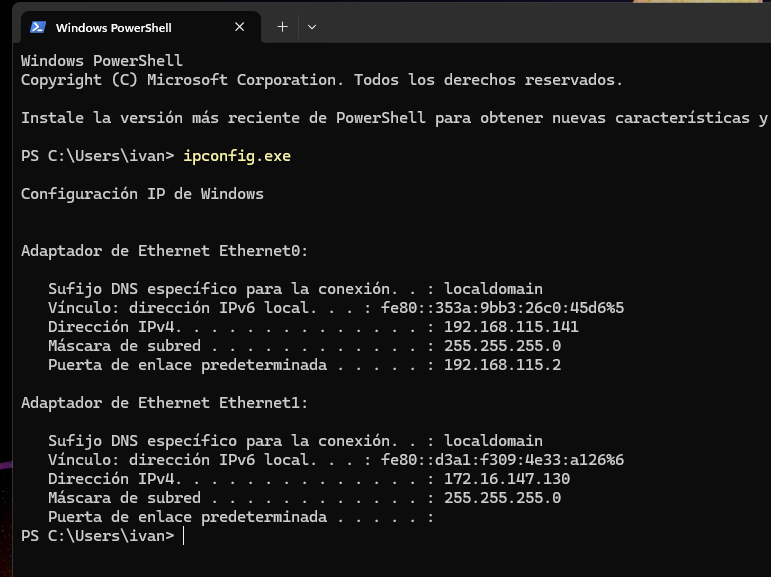
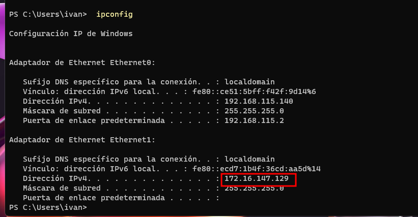
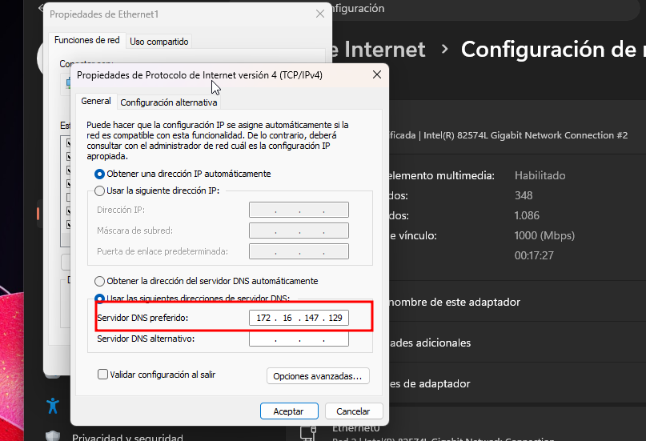
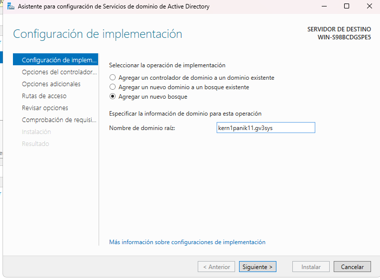
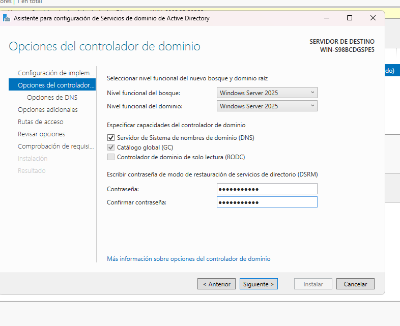
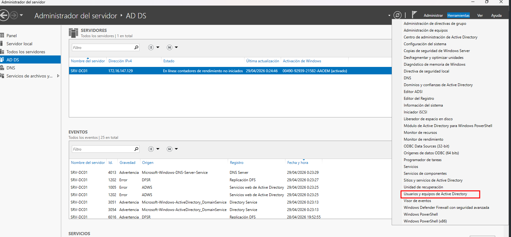
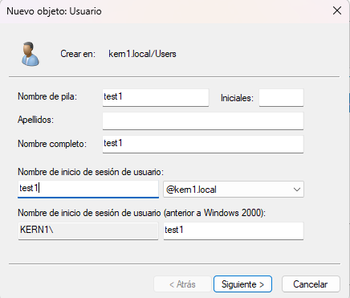
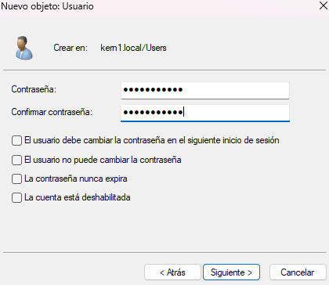

Objetivo: instalar Active Directory Domain Services (AD DS), promover el servidor a controlador de dominio y unir un cliente Windows 11 al dominio.
Captura 1.

Se revisa la IP del equipo cliente para verificar su configuración de red inicial.
Captura 2.

Se comprueba la IP del servidor para confirmar que cliente y servidor están en la misma red.
Captura 8.

En el cliente se configura como DNS preferido la IP del servidor (172.16.147.129).
Captura 9.

Se ejecuta la promoción del servidor a controlador de dominio creando un nuevo bosque.
Captura 10.

Se define la contraseña DSRM y se continúa con la validación de requisitos.
Captura 11.

Se abre "Usuarios y equipos de Active Directory" para administrar objetos del dominio.
Captura 13.

Se introducen los datos del usuario (nombre e identificador de inicio de sesión).
Captura 14.

Se define contraseña y políticas básicas de cuenta para finalizar el alta.
Si Windows Server está en edición Evaluation, puede tener limitaciones periódicas. Para un entorno estable, convierte la edición a Standard/Datacenter y activa con licencia válida mediante métodos oficiales de Microsoft.
=======En esta práctica se instala y configura Active Directory en Windows Server, y se une un cliente Windows 11 al dominio para validar autenticación centralizada.
Se muestra la IP del equipo cliente para comprobar la configuración de red inicial antes de unirlo al dominio.
Se visualiza la IP del servidor, verificando que cliente y servidor están en el mismo segmento de red.
Se inicia el asistente de "Agregar roles y características" desde Server Manager para instalar AD DS.
Se selecciona instalación basada en roles o características, opción requerida para añadir Active Directory.
Se elige el servidor de destino sobre el que se desplegará el rol de dominio.
Se marca el rol Active Directory Domain Services (AD DS) dentro de la lista de roles disponibles.
Se revisa el resumen final del asistente antes de lanzar la instalación y reinicio automático del servidor.
En el cliente se configura como DNS preferido la IP del servidor para resolver el dominio correctamente.
Tras instalar AD DS, se abre la promoción del servidor a controlador de dominio creando un nuevo bosque.
Se define la contraseña DSRM para recuperación del directorio y se continúa con la validación previa.
Se accede a "Usuarios y equipos de Active Directory" para administrar objetos del dominio recién creado.
Se inicia el asistente de nuevo usuario dentro de la consola de administración de Active Directory.
Se rellena la información de identidad del usuario de dominio (nombre, inicio de sesión y contenedor).
Se configura la contraseña del usuario y las políticas básicas de cambio/expiración para completar su creación.
Se comienza la creación de una Unidad Organizativa (OU) para ordenar los objetos del dominio.
Se asigna nombre a la OU y se confirma su alta en la estructura jerárquica de Active Directory.
Se verifica la OU creada dentro del árbol del dominio para usarla en la organización de cuentas y equipos.
En Windows 11 se cambia la pertenencia de grupo de trabajo a dominio, apuntando al dominio del servidor.
Se introduce un usuario autorizado de dominio para completar la unión del equipo cliente al directorio.
Se confirma el mensaje de bienvenida al dominio, indicando que la operación de unión se realizó correctamente.
Tras reiniciar el cliente, se prepara el inicio de sesión usando credenciales de dominio en lugar de cuenta local.
Se inicia sesión con el usuario creado en Active Directory, validando autenticación centralizada y acceso al dominio.
>>>>>>> mainEntorno de trabajo: Windows Server Datacenter 2025 y Windows 11 Pro.